1 · Núcleo fijo y plugins
Si algo puede ser plugin, es plugin. El núcleo es lo que el agente usa pero no puede modificar: de él depende recuperarse de una automodificación defectuosa.
2 · Cómo se componen los registros (State)
Cada registro (tools, modelos, prompt, hooks) se reconstruye desde un valor vacío aplicando, en orden, las transformaciones de los plugins activos. Quitar un plugin es quitar sus transformaciones y reconstruir. Mismo diseño que OpenCode 2.0 («OpenCode Reloaded»).

Las transformaciones viven en el Scope del plugin. Composition.batch agrupa cambios: reemplazar un plugin se ve como un único cambio y sube la versión de la composición en uno.
3 · Un prompt de principio a fin
Cada «Actividad» es un punto de persistencia: tras un reinicio el Workflow se rejuega y las actividades ya completadas devuelven su resultado guardado sin volver a ejecutarse.

llm/n lee el registro vivo al ejecutarse; su resultado guardado es la foto de la composición de esa llamada. Al rejugar se usa la foto, y un plugin nuevo se ve en la llamada siguiente. Los nombres de actividad son contrato durable: renombrarlos rompe el rejuego de runs en curso.
4 · Automodificación
El agente escribe un plugin y lo usa en la siguiente llamada al modelo del mismo run. Si el plugin nuevo no carga, sigue funcionando la versión anterior.
5 · Qué se persiste y cuándo
Tablas de Pie y del motor en la misma base de datos. Los deltas de streaming nunca se guardan.

| Momento | Qué queda en disco | Garantía |
|---|
| prompt() | Sesión reclamada (active_run) + entrada user, en una transacción | Un solo run por sesión; el arranque reanuda los runs reclamados |
| llm/n termina | Respuesta completa (reply del motor) | Ese turno no se vuelve a pagar tras un reinicio |
| assistant/n, results/n | Entradas assistant y toolResult | Exactamente una vez (id determinista) |
| Tool empieza | Marca en pie_tool_attempts | Detecta «se ejecutó a medias» |
| steer / followUp | Fila en pie_inputs | Se consume en transacción: ni se pierde ni se duplica |
| abort() | Fila en pie_aborts | Se aplica aunque el proceso esté caído |
| Fin del run | Entrada runEnd + sesión libre | Idempotente (finalizador del Workflow) |
| Deltas de texto | Nada (PubSub en memoria) | Quien llega tarde lee las entradas y se engancha al vivo |
6 · Estados de una sesión
7 · Entornos
Un solo parámetro, storage. La regla: sesiones y motor siempre en la misma base de datos.
8 · Casos extremos
probadoimplementadodiseño, sin implementarriesgo / por verificar
| Caso | Qué pasa | |
|---|
| SIGKILL durante una tool idempotente | Al reanudar se vuelve a ejecutar. | probado |
| SIGKILL durante una tool no idempotente | No se repite: el modelo recibe «outcome unknown, comprueba el estado». | probado |
| SIGKILL con un turno del LLM ya respondido | No se vuelve a llamar al modelo para ese turno. | probado |
| SIGKILL a mitad del stream del LLM | Se repite ese turno entero (se paga otra vez). Mismo mecanismo que el anterior. | implementado |
| prompt() con un run activo | Falla con SessionBusy salvo streamingBehavior. | probado |
| followUp durante un run | Se absorbe en el mismo run al terminar. | probado |
| steer durante una tool | Se entrega tras las tools y antes de la siguiente llamada. | probado |
| followUp justo cuando el run termina | finish y el encolado se serializan en una transacción. | implementado |
| abort() durante una tool | La tool se corta, el run acaba aborted y la sesión queda libre. | probado |
| abort() con el proceso caído | La marca en pie_aborts se comprueba al empezar cada actividad. | implementado |
| Texto parcial al abortar | Se guarda como assistant con motivo aborted. | implementado |
| Tool inexistente o de un plugin ya quitado | Resultado de error para el modelo; el run sigue. | probado |
Hook tool.before deniega | Resultado «Denied: …»; la decisión queda guardada con la actividad. | probado |
| Plugin instalado a mitad de run | Su tool aparece en la siguiente llamada al modelo. | probado |
| Plugin con error de sintaxis o setup fallido | Se mantiene la versión anterior; el error queda en status. | probado |
| Rate limit / 5xx | 2 reintentos con backoff dentro de la actividad; luego failed. Faltan eventos auto_retry_*. | implementado |
| write / edit repetidos tras reinicio | write reescribe lo mismo; edit da por aplicado un reemplazo cuyo texto nuevo ya está. | probado |
| bash interrumpido o abortado | Se mata el grupo de procesos entero. | probado |
| Plugin escrito fuera del repo | Importa effect y @pie/sdk desde la copia de Pie. | probado |
| Tool sin parámetros con proveedores OpenAI-compatibles | Se envía un JSON Schema de objeto vacío explícito. | probado en vivo |
Opcionales enviados como null | Se reintenta la validación sin los null de primer nivel. | probado |
| Contexto desbordado | Compactación como plugin. | diseño |
| Aprobación humana | DurableDeferred pedido por un hook. | diseño |
| Navegar / fork del árbol | El árbol existe en datos; falta la API. | diseño |
| Actualizar Pie con runs a medias | Cambiar nombres de actividad o esquemas rompe el rejuego. | riesgo |
| Dos procesos sobre el mismo .db | SingleRunner asume un nodo. | por verificar |
9 · API del SDK (implementada)
import { Pie, Plugin, Storage, OpenCodeGoPlugin, defineTool } from "@pie/sdk"
const PieLive = Pie.layer({
storage: Storage.sqlite("pie.db"), // o Storage.memory
plugins: [...Pie.builtins, myTools], // opencode-go, system-prompt, context-files, coding-tools
pluginDirectories: [".pie/plugins"] // vigilados: automodificación
})
const program = Effect.gen(function*() {
const pie = yield* Pie.Pie
const session = yield* pie.create({ cwd: "/repo", model: "opencode-go/deepseek-v4.1-flash" })
// también: pie.open(id) · pie.list · pie.events
yield* session.events.pipe(Stream.runForEach(onEvent), Effect.forkScoped)
yield* session.prompt("arregla el test")
yield* session.steer("usa vitest")
yield* session.followUp("luego haz commit")
const outcome = yield* session.awaitIdle // { status: "completed" | "aborted" | ... }
const entries = yield* session.entries // rama actual
})
// Un plugin: un Effect con su Scope; todo lo que registra se va con él
export default Plugin.define({
id: "guardian",
setup: (ctx) => Effect.gen(function*() {
yield* ctx.tools.transform((tools) => { tools.set("word_count", defineTool({ ... })) })
yield* ctx.prompt.transform((parts) => { parts.push({ key: "guardian", text: "..." }) })
yield* ctx.hook("tool.before", (e) => Effect.sync(() => {
if (e.tool === "bash") e.decision = { _tag: "Deny", reason: "solo lectura" }
}))
})
})
// Eventos: agent_start · turn_start · text_delta · reasoning_delta · tool_start · tool_end · entry · agent_end